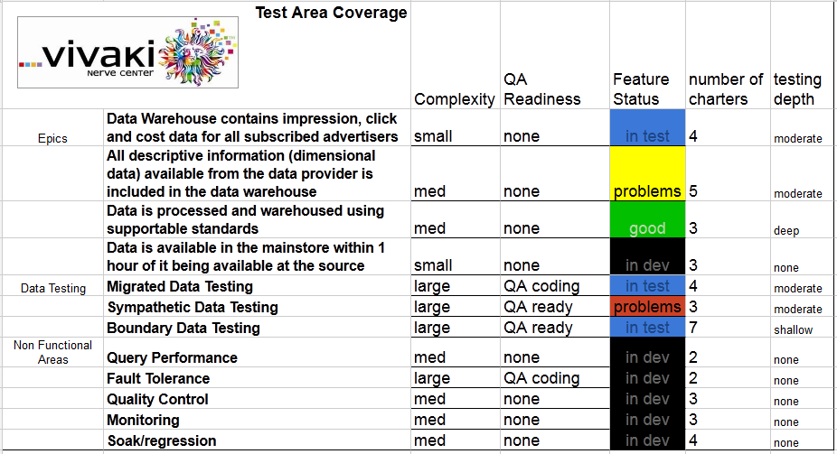

Installment 3: Reporting Project Status with A Lightweight QA Dashboard
The thing that we like about test charters is that although the methods we employ are often technical, the goals of testing are always about the business. The language that we employ with charters allows us to speak in business language when needed and technical language when that makes more sense.
To roll up charters into a high level status for executives and project managers we employ a simple QA dashboard that is guided by the following ideas:
- The goals of the project are the goals of the business
- Any single bug or failed test may cause us recommend not releasing the project
- The status of QA is ultimately qualitative and not quantitative. Any 99% of the tasks do not represent 99% of the work, nor do they represent 99% of the risk
- In data processing systems, we often find that the processing is as much work as the data. To get a meaningful product the data needs to process on schedule as much as it must process correctly.
- Our stakeholders understand these issues as much as we do and we agree that discussing risks is more productive than counting tasks.
To serve those ideals, we make a dashboard that has line items for the goals of the business and the areas of risk. In our teams we use our epics to express the high level aims of a project and to contain the stories. These epics become the first things that we track against. Then the data, including data migrated from legacy systems, normal data, and data aout at the boundaries. And the processing, how does it recover from failure, does it process within the time required, is the state of the system and the data easily discernable?
I took inspiration from James Bach’s Low Tech Testing Dashboard and incorporated some of the elements of our process to come up with a grid that should be pretty quick and easy to understand.

The most important column is that one with the colored background: “feature status”. Status flows from “in development” to “in test” to “OK” or “problems” When problems are observed by QA they show as yellow, when they are agreed to be problems by other team members, they will be red.
Each test charter belongs to one of the rows on this grid. As we execute charters, we learn more about the depth of our testing and update the dashboard. But note that we do not discuss anything in terms of n of x items complete or aggregate any columns. Both the QA team and the stakeholders know that we continue to add charters as we identify emerging risk, and that the whole product is no-go until every row in Feature Status is green.
This allows us to convey what we feel to be qualitative data in a qualitative way. The common method of counting rates and percentages is usually in effort to make the deluge of data digestible by aggregating it to a few easy numbers. This structure and vocabulary aims to present a more accurate story through a dashboard that is simple to update and is straightforward to read.
This article was written as part of work I did at the Vivaki Nerve Center, part of the Publicis Groupe. Its original archive can be found at https://web.archive.org/web/20160623204502/http://www.qathedata.com/blog/2012/10/15/qa-dashboard/